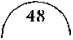
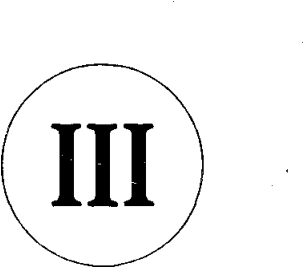
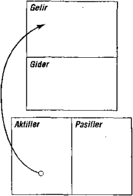

Yanımdaki iki kadın Mike’ın babasıyla görüşüp gideli yarım saat olmuştu bile. İhtiyar bir adam yirmi dakika içeride kalmış, sonra o da gitmişti.
Evde kimse kalmamıştı, güzel, pırıl pırıl bir Hawaii gününde küflü karanlık bir oturma odasında, çocuk emeğini sömüren bir üçkâğıtçıyla görüşmek üzere bekliyordum. Ça - lışma odasından sesi geliyordu, telefonla konuşuyordu; ben umurunda bile değildim. Aslında her an kapıdan çıkıp gide - bilirdim de, nedense kaldım.
Sonunda, on beş dakika sonra, saat tam dokuzda zengin baba ofisinden dışarı çıktı, ağzını açıp tek kelime etmeden eliyle loş ofisine girmemi işaret etti.
Oturduğu koltukta dönerken, “Anladığım kadarıyla zam istiyorsun, yoksa işi bırakacaksın,” dedi.
“Şey, verdiğiniz sözü yerine getirmiyorsunuz,” diye gevelerken gözyaşlarımı zor tutuyordum. Dokuz yaşında bir çocuğun yetişkin birine kafa tutması tedirgin e diciydi. “Sizin yanınızda çalışırsam, bana öğreteceğinizi söyledi - niz. İşte, sizin için çalışıyorum. Sıkı çalışıyorum. Çalışmak için beysbol oynamayı bile bıraktım. Ama siz sözünüzü tut - muyorsunuz. Bana hiçbir şey öğretmiş değilsiniz. Kasabada herkesin dediği doğruymuş meğer, siz palavracının tekisiniz. Açgözlüsünüz. Kazancın tümünü kendinize istiyorsunuz, yanınızda çalışanlara aldırdığınız yok. Beni
51
downloaded from KitabYurdu.org
bekletiyor, hiç saygı göstermiyorsunuz. Oysa ben küçük bir çocuğum, daha iyi muamele görmeyi hak ediyorum. ” Zengin baba döner koltuğunu geriye kaydırdı, ellerini çe - nesine dayayıp gözlerini bana dikti. Sanki beni inceler gibiy di.
“Hiç fena sayılmaz,” dedi. “Daha bir ay olmadı, yanımda çalışanların çoğundan farklı değilsin.”
“Ne?” diye sordum. Dediğinin tek kelimesini anlamış değildim. Bozuk çalmayı sürdürdüm: “Anlaşmamızda üstünüze düşeni yerine getirip bana öğreteceğinize inanmıştım. Sizse bana işkence etmek istiyorsunuz. Bu zalimce. Gerçekten zalimce.”
“Öğretiyorum ya,” dedi usulca.
“Bana ne öğrettiniz? Hiç!” diye haykırdım. “Çerez para - sına çalışmayı kabul ettiğimden beri benimle konuşmadınız bile. Saati on sent. Hah! Sizi yetkililere şikâyet etsem yeridir. Çocuk-işçi yasaları var, biliyorsunuz. Babam da devlet me muru.”
“Bak sen!” dedi. “İşte şimdi eskiden yanımda çalışmış kimseler gibi konuştun. İşten çıkardığım ya da işi bırakanlar gibi.”
“Söyleyeceğiniz bir şey yok mu?” diye direttim, küçük bir çocuk için fazla atılgan davranıyordum. “Bana yalan söylediniz. Ben sizin için çalıştım, siz sözünüzü tutmad ınız.
52
downloaded from KitabYurdu.org
Bana hiçbir şey öğretmediniz.”
Zengin baba sakinliğini bozmadan, “Sana hiçbir şey öğ - retmediğimi nereden biliyorsun?” diye sordu.
“Beni karşınıza alıp kısacık bir süre olsun konuşmadınız. Uç haftadır çalışıyorum, tek bir şey olsun, öğretmediniz,” derken suratımı iyice asmıştım.
Zengin baba sordu: “Öğretmek için ille de konuşmak ya da nutuk çekmek mi gerekir?”
“Evet, elbette,” dedim.
“Bu yöntemi okulda kullanırlar,” dedi gülümseyerek. “Oysa hayat öyle öğretmez; şunu da belirteyim, hayat en iyi öğretmendir. Hayat seninle konuşmaz. Adamı oradan oraya sürükler. Her sürüklediğinde bir şey söylüyordur. ‘Silkin ve uyan. Öğrenmen gereken bir şey var,’ diyordur.”
“Bu adam neden söz ediyor?” diye geçirdim içimden. “Hayatın beni oradan oraya sürüklemesi benimle k onuşması anlamına mı geliyor yani?” Artık hiç kuşkum kalmamıştı, işi bırakmaktan başka çıkar yol yoktu. Kilit altına alınması gereken biriyle konuşuyordum.
“Hayat derslerini öğrenirsen başarılı olursun. Yoksa, ha - yat seni oradan oraya atmayı sürdürür. İnsanlar iki yoldan gider. Bazısı kendini hayatın akışına bırakır. Diğerleri öfkelenir, ona dur der. Onlar patronuna dur der ya da işine, çocuklarına, eşine. Dur diyenin hayat olduğunu bilmezler.”
53
downloaded from KitabYurdu.org
Neden bahsettiği hakkında en ufak bir fikrim yoktu. “Hayat bizi sağa sola sürükler. Bazısı pes eder. Diğerleri savaşır. Dersini alıp yoluna devam edenler birkaç kişidir. Onlar hayatın kendilerini sürüklemesine izin verirler. Bu birkaç kişi bir şeyler öğrenmeye gerek duyar ve ister. Öğrendikçe yollarına devam ederler. Çoğu pes eder, senin gibi birkaç kişi savaşır.”
Zengin baba ayağa kalktı, tamir edilmesi gereken pence - reyi gıcırtıyla kapadı. “Bu dersi öğrenirsen, akıllı, varlıklı ve mutlu bir genç olursun. Yok, öğrenmezsen, hayatını suçu binlerine atarak geçirirsin; işine, düşük maaşına, patronuna. Ömrün boyunca bütün maddi sıkıntılarına çözüm olacak o büyük günü bekler durursun.”
Dediklerini hâlâ dinliyor muyum diye, zengin baba göz - lerini bana dikmişti. Göz göze geldik. Bakışlarımızla birbirimize çok şey anlatmıştık. Sonunda-vermeye çalıştığı mesajı alana dek çekmedim bakışlarımı. Haklıydı elbette. Suçu ona atıyordum, öğrenmek isteyen bendim. Savaşıyordum.
Zengin babanın diyecekleri bitmemişti: “Ya da yüreksiz biriysen, hayatın seni her sürüklediğinde pes edersin. Öyle biriysen, hayatın boyunca işini sağlam kazığa bağlar, doğru şeyler yapar, asla başına gelmeyecek bir şeye karşı kendini korursun. Sonra da sıkıcı bir ihtiyar olarak ölüp gidersin.
54
downloaded from KitabYurdu.org
Seni seven pek çok dostun olur, çünkü çalışkan, iyi birisiııdir. Ömrünü güvenli adımlar atmakla, doğru şeyler yapmakla geçirirsin. Oysa gerçek şudur, hayatın seni teslim almasına izin vermişsindir. Risk almak seni hep ürkütmüştür. Aslında kazanmak istemişsindir, gelgeldim kaybetme korkusu kazanma heyecanından baskın çık mıştır. Bunu bir tek sen bilirsin. Sağlam adımlar atmayı seçmişsindir.”
Yeniden göz göze geldik. On saniye boyunca bakıştık, mesajı alana dek.
“Beni sağa sola mı sürüklüyordunuz?” diye sordum. Gülümseyerek, “Kimilerine göre öyle denebilir,” dedi. “Bana göreyse, sana hayatın tadını koklattım.”
“Hayatın tadı nedir?” Kızgınlığım hâlâ geçmemişti, ama meraklanmıştım da. Öğrenmeye hazırdım.
“Siz ikiniz benden para kazanmasını öğrenmek isteyen ilk kişilersiniz. 150’den fazla işçim var, ama bir tanesi bile asla para hakkında ne bildiğimi sormadı. Dolayısıyla, çoğu yaşantısının en güzel yıllarını ne için çalıştıklarını pek anlamadan para için çalışmakla geçirecek.”
Can kulağıyla dinliyordum.
“Mike gelip de nasıl para kazanılacağını öğrenmek istediğinizi söylediğinde, gerçek yaşama çok benzeyen bir kurs programı hazırladım. Soluğum tükenene kadar
55
downloaded from KitabYurdu.org
konuşup anlatabilirdim de, ama bana kulak vermezdiniz. Böylece bana kulak veresiniz diye hayatın sizi birazcık sağa sola sürüklemesine karar verdim. Saatine 10 sent ödeme min nedeni de bu.” “Peki saati 10 sent kazanmakla ne öğrenmiş oluyorum? Sizin beş para etmez, işçilerini sömüren biri olduğunuzu mu?”
Zengin baba geriye kaykılıp kahkahalara boğuldu. Gül - mesi bittikten sonra, “Bakış açını değiştirsen iyi olur. Beni suçlamayı, sorunun benden kaynaklandığını düşünmeyi bı - rak. Sorun bensem, o zaman beni değiştirmen gerek. Eğer sorunun kendinden kaynaklandığını anlarsan, ancak o zaman kendini değiştirebilir, bir şey öğrenip akıllanırsın. Bak ne diyeceğim, kendini değiştirmek b aşkasını değiştirmekten çok daha kolaydır.”
“Anlamadım,” dedim.
“Kendi sorunların için beni suçlama,” derken artık sabrı tükenmeye başlamıştı.
“Ama saatine yalnızca 10 sent ödüyorsunuz.” “Peki bu sana ne öğretir?” Gülümsüyordu. “Ucuzcu olduğunuzu,” dedim sinsi bir sırıtışla. “Bak, sorunun ben olduğumu düşünüyorsun.” “Ama öyle.”
“Peki, bu tavrını koru ve hiçbir şey öğrenmemekte diret. Sorunu bende arama tavrını sürdür, elinde başka ne seçenek
56
downloaded from KitabYurdu.org
kalıyor?”
“Şey, eğer zam yapmaz, bana biraz daha saygılı davran - maz ve öğretmezseniz, işi bırakacağım.”
“Güzel söyledin,” dedi zengin baba. “Çoğu kimse böyle yapar. İşi bırakır, gider başka iş, daha iyi fırsatlar, daha yük - sek ücret ararlar, yeni bir iş ya da daha yüksek ücret sorunla - rım çözecek zannederler. Oysa çoğu zaman çözmez.” “Öyleyse sorunu ne çözer peki? Saati 10 sentten hesapla - nan ücreti kabul edip gülümsemek mi?”
Zengin baba gülümsedi. “Başkaları böyle yapar. Hem kendilerinin hem de ailelerinin mali sıkıntı çekeceğini bile bile maaş çeklerini alırlar. Ama daha fazlasını yapmaz, daha çok para kazanırlarsa, sorunları çözülür umuduyla zam yapılmasını beklerler. Çoğu bunu yapar, bazısı da ek iş bulur, daha çok çalışır, ama karşılığında gene düşük ücret vardır.”
Gözlerimi yere dikip oturdum, zengin babanın anlatmaya çalıştığı dersi anlamaya başlamıştım. Hayatın tadı olduğunu hissedebiliyordum. Sonunda başımı kaldırıp az önceki sorumu yineledim: “Sorunu ne çözer peki?” “Bu,” diyerek başımı yavaşça okşadı. “İki kulağının ara - sındakiler.”
İşte o an zengin baba kendini çalışanlarından ve yoksul babamdan ayıran -ve de yüksek öğrenimli ama yoksul
57
downloaded from KitabYurdu.org
babam ömründe hep darlık içinde boğuşurken, zengin babamı er ya da geç Havvaii’nin en zengin adamı yapacak olan- temel yaktaşımını benimle paylaşıyordu. Ömür boyu fark yaratacak tek bir görüş açısıydı bu.
Zengin baba bu görüş açısını defalarca tekrarladı ve ben buna Ders 1 adını verdim.
“Yoksullar ve Orta Sınıf Para İçin Çalışır. Zenginler Parayı Çalıştırır. ”
O pırıl pırıl cumartesi sabahı, yoksul babamın bana öğrettiğinden bambaşka bir bakış açısını öğreniyordum. Henüz dokuz yaşında olmama rağmen her iki babamın da öğrenmemi istediklerini daha iyi anlamıştım. Her ikisi de okumamı salık veriyor, fakat farklı konulara öncelik tanıyorlardı.
Yüksek öğrenimli babam onun izinden g itmemi söylüyordu. “Evlat, çok çalışmanı, iyi notlar almanı istiyorum, böylece büyük bir şirkette sağlam, güvenceli bir iş bulabilirsin. Ek gelirlerinin de mükemmel olmasına dikkat et.” Zengin babamsa paranın nasıl çalıştırılacağını öğrenmemi, böylelikle parayı kendi adıma çalıştırmamı öğütlüyordu. Bu dersleri hayatım boyunca öğrenecektim, ama sınıfta değil onun rehber liğinde.
Zengin babam ilk dersi şöyle sürdürmüştü: “Saatte 10
58
downloaded from KitabYurdu.org
sente öfkelenmene sevindim. Eğer öfkelenmeyip güle oyna - ya kabul etseydin, sana bir şey öğretemeyeceğimi söylemek zorunda kalırdım. Unutma, öğrenmek enerji, tutku, sönme - yen bir arzu gerektirir. Öfke de bu formülün vazgeçilmez bir parçası, çünkü tutku, öfkeyle sevginin bileşimidir. Para söz konusu olduğunda pek çokları sağlam ve güvenli adım atmak isterler. Onları yönlendiren de tutku değil, korku olur.”
“Yani düşük ücretli işlerde çalışmayı kabul etmelerinin nedeni bu mu?”
“Evet,” diyerek şöyle anlattı zengin babam: “Bazı insan - lar işçilerime şekerpancarı çiftliği ya da hükümet kadar ücret vermemekle onları sömürdüğümü savunur. Ben de onlar kendi kendilerini sömürüyorlar derim. Bunun sebebi, benim değil onların korkularıdır.”
“Peki ama daha çok ücret vermeniz gerektiğini düşünmüyor musunuz?”
“Düşünmem gerekmiyor. Üstelik daha çok para alsalar da sorunlarını çözemeyecekler. Babanı ele alalım. Kazancı hiç de fena değil, gene de faturalarını ödemekte zorlanıyor. Çoğu kimse, daha çok kazandıkça daha çok borca girer.” “Ya saatte 10 sent vermenizin ne anlamı var?” dedim
gülerek. “Dersin bir parçası mı?”
59
downloaded from KitabYurdu.org
“Doğru. Bak, baban okudu, olağanüstü bir öğrenim gör - dü; amacı yüksek ücretli bir iş bulmaktı. Buldu da. Buna rağmen maddi sorunlarını aşamadı, çünkü okulda ona parayla ilgili hiçbir şey öğretmediler. Bunun yanı sıra, para için çalışmak gerektiğine inanıyor.”
“Siz inanmıyor musunuz?”
“Hayır,” diyordu zengin baba. “Eğer para için çalışmayı öğrenmek istersen, okulda kalırsın; hele bir de paradan söz açıldığında en baskın duygun korkuysa.”
Kaşlarımı çatarak, “Anlamıyorum,” dedim.
“Şimdilik kaygılanmana gerek yok. Çoğu kimsenin işin - den ayrılmamasının nedeninin korku olduğunu bil yeter. Fa - turalarını ödeyememe korkusu. İşten atılma korkusu. Yete - rince parası olmaması korkusu. Her şeye yeni baştan başlama korkusu. Bir meslek ya da ticaret öğrenmek üzere okumanın bedeli bu, para için çalışmak. Pek çokları paranın kölesi olur çıkar, sonra da patronlarına öfkelenir.”
“Parayı kendin için çalıştırmayı öğrenmek tümüyle farklı bir öğrenme dalı mı?”
“Kesinlikle,” dedi zengin baba, “kesinlikle öyle.”
O güzelim parıltılı Hawaii’nin bu güzel cumartesi sabahında sessizce oturduk. Arkadaşlarım Küçükler Ligi beysbol maçına başlamak üzereydi herhalde. Ama nedense ben, saati 10 sente çalışmaya karar verdiğime
60
downloaded from KitabYurdu.org
şükrediyordum.

Arkadaşlarımın okulda öğrenmedikleri bir şeyle öğreneceğimi seziyordum.
Zengin baba, “Öğrenmeye hazır mısın?” diye sordu. “Kesinlikle,” derken yüzümde güller açmıştı.
“Ben sözümü tuttum. Sana pek çok şey öğretmiş bulunu - yorum,” diye belitti. “Dokuz yaşında para için çalışmanın tadını aldın. Geçirdiğin son bir ayı elli yılla çarparsan, pek çok kimsenin yaşamlarını nasıl harcadıklarını anlarsın.” “Anlamıyorum.”
“Beni görmek için kuyrukta beklemek nasıl bir duyguydu? Önce işe alınmak için bekledin, sonra da zam istemek için.”
“Berbattı,” d edim.
“İşte, eğer para için çalışırsan, diğer insanlar gibi hayat da sana böyle gelir. Peki ya Bayan Martin üç saatlik emeğinin sonucunda avucuna üç onluk koyduğunda kendini nasıl his settin?”
“Yeterli olmadığını düşündüm. Bedava çalıştığımı düşündüm. Hayal kırıklığına uğradım.”
“Çalışanların çoğu maaş çeklerini aldıklarında aynı şeyleri hissederler. Hele vergi kesintisi ve diğer harçlar düştükten sonra. Sen hiç olmazsa ücretinin tamamını aldın.”
61
downloaded from KitabYurdu.org
“Yani işçilerin çoğu ücretlerinin tamamını almazlar mı?” diye şaşkınlıkla geveledim.
“Elbette hayır!” oldu zengin babanın yanıtı. “Önce dev - let kendi payını alır.”
“Nasıl yapar bunu?”
“Vergilerle. Kazancından vergi verirsin. Harcadığından vergi ödersin. Biriktirdiğinden vergi kesilir. Ölünce de kur - tulmazsın vergid en.”
“Toplum devletin bunu yapmasına neden göz yumar?” “Zenginler izin vermez,” diye gülümseyerek sürdürdü açıklamasını. “Yoksullarla orta sınıftakilerse buna göz yumar. Babandan daha çok kazandığıma kalıbımı basarım, ama onun ödediği vergi benimkinden faz ladır.”
“Nasıl olur bu?” diye sordum. Dokuz yaşında bir çocuk olarak kafam almamıştı bunu. “İnsan devletin bunu yapma - sına nasıl izin verir?”
Zengin baba sessiz kaldı. Sanırım ağzımı açmadan dinle - memi istiyordu.
Sonunda sakinleştim. Duyduklarım hoşuma git memişti. Babam durmadan ödediği vergilerin artmasından yakınırdı, ama bunu durdurmak için bir şey yapmazdı. Yoksa hayat onu da bir sağa, bir sola mı sü rüklüyordu?
Zengin baba koltuğunda bir ileri bir geri yavaşça sallanı - yor, beni süzüyordu.
62
downloaded from KitabYurdu.org
“Öğrenmeye hazır mısın?” diye bir kez daha sordu. Usulca kafa salladım.
“Dediğim gibi öğrenecek çok şey var. Parayı kendin için çalıştırmayı öğrenmek yaşam boyu okunacak bir ders. Çoğu kimse dört yıllık yüksekokullara gider ve öğrenimleri sona erer. Oysa ben para dersinin ömrüm boyunca sona ermeye - ceğini biliyorum; çünkü öğrendikçe, bilmem gereken daha çok şey olduğunu anlıyorum. Bu konuyu araştırmaya kalkan çok azdır. İşe gider, maaşlarını alır, faturaları öderler, o ka - dar. Daha çok paranın maddi sorunlarım çözeceğine inanır - lar. Sorunun finans bilgileri olmayışından kaynaklandığını anlayan yalnızca birkaçıdır.”
Kafam karışmıştı, “Öyleyse babamın vergi problemi aslında onun parayı tanımamasıyla mı ilgili?” diye sordum. “Bak,” dedi zengin baba. “Parayı kendin için çalıştırmayı öğrenmede vergilerin yeri çok sınırlıdır. Bugün para hakkındakileri öğrenmeye hâlâ hevesli olup olmadığını bilmek istedim. Pek çokları bundan yoksundur. Okula gidip bir meslek edinmek, işlerinde eğlenmek ve çok para kazan - mak isterler. Bir gün uyandıklarında kendilerini büyük mali sıkıntılar içinde bulurlar, bu yüzden de işi bırakamazlar. Pa - rayı nasıl çalıştıracağını öğrenmek yerine para için çalışmanın bedelidir bu. Söyle bakalım, hâlâ öğrenmeye hevesli misin?”
63
downloaded from KitabYurdu.org
Kafamı salladım.
“Güzel,” dedi zengin baba. “Şimdi işinin başına dön. Bu sefer sana hiçbir şey ödemeyeceğim.”
Şaşkınlık içinde, “Ne?” diyebildim.
“Dediğimi duydun. Hiçbir şey. Her cumartesi üç saat çalışmaya devam edeceksin, ama saatine 10 sent almayacaksın. Para için çalışmamanın anlamını ö ğrenmek istediğini söyledin, öyleyse sana hiç para vermeyeceğim.” Kulaklarıma inanamamıştım.
“Aynı konuyu Mike’la çoktan görüştük. O işe gitti bile, konservelerin tozunu alıp raflara diziyor, ücretsiz. Hadi sen de elini çabuk tut da işinin başına git.”
“Bu hiç adil değil,” diye bağırdım. “Ücret vermeniz gerek.” “Öğrenmek istediğini söyledin. Bunu şimdi öğrenmezsen, senin de sonun oturma odasında gördüğün iki kadınla yaşlı adamınkinden farklı olmaz, seni işten çıkarmayayım diye dua edersin. Ya da baban gibi, çok para kazanır ama gırtlağına kadar borç içinde yüzer, daha fazla para bulsam da sorunu çözsem diye umut edersin. İstediğin buysa, saatte 10 sent uygulamasına geri dönelim. İstersen yetişkinlerin çoğunu örnek de alabilirsin. Yeterli ücret verilmediğinden yakınır, işi bırakır, kendine başka iş ararsın.”
“Peki ama ne yapacağım?”
64
downloaded from KitabYurdu.org
Zengin baba başıma usulca vurdu. “Bunu kullan,” dedi. “İyi kullanırsan, çok geçmeden sana böyle bir fırsat tanıdı - ğım için bana teşekkür edeceksin, zengin bir adam olma yo - lunda ilerleyeceksin.”
Önüme konan seçeneğe hâlâ inanamıyordum, olduğum yerde bir süre daha kalakaldım. Buraya zam istemeye gelmiş, sonra da bedavaya çalışma teklifiyle karşı karşıya kalmıştım.
Zengin baba bir kez daha hafifçe dokundu başıma. “Bu - nu kullan. Hadi şimdi çek git, işinin başına dön.”
DERS 1
Zenginler Para İçin Çalışmaz
Parasız çalıştığımı yoksul babama söylemedim. Anlamazdı zaten, ayrıca tam olarak kavrayamadığım bir şeyi ona anlatma zahmetine girmek de işime gelmiyordu. Üç hafta daha, Mike’la birlikte her cumartesi üç saat bo - yunca karşılıksız çalıştık. Beni rahatsız eden çalışmak değildi, işin tekdüze temposuna da alışmıştım. Benim derdim beysbol maçlarını kaçırmak ve bayıldığım karikatür dergilerini alacak param olmamasıydı.
Üçüncü haftanın sonunda, öğle saati zengin baba çalıştı - ğımız yere çıkageldi. Kamyonetinin park yerine
65
downloaded from KitabYurdu.org
yaklaştığını, motoru stop ederken patırtısını duymuştuk. Mağazaya girince Bayan Martinde kucaklaştı. İşlerin nasıl gittiği hakkında bilgi aldıktan sonra dondurma dolabı na yönelip içinden iki çubuk dondurma çıkardı, parasını ödedi, Mike’la bana işaret etti.
“Hadi gelin çocuklar, şöyle bir dolaşalım.”
Birkaç arabanın arasından süzülüp caddeyi geçtik, birkaç yetişkin insanın softbol* oynadıkları çimenlik bir alana yöneldik. Onlardan uzakta bir piknik masasına oturduktan sonra elindeki dondurma çubuklarını Mike’la bana uzattı. “Nasıl gidiyor çocuklar?”
“Fena değil.” dedi Milce.
Ben de başımla onayladım.
“Bir şeyler öğrendiniz mi bari?” diye sordu.
Mike’la bakıştık, omuz silktik, aynı anda başımızı salladık.
* Bir çeşit beysbol.
Hayatın En Büyük Tuzaklarından Birinden Sakınma “Pekâlâ, ikiniz de artık biraz kafa yormaya başlasanız iyi olur. Hayatın en büyük derslerinden birindesiniz. Dersinizi bellerseniz, yaşam boyu özgürlüğün ve güvencenin tadına varırsınız. Dersi almazsanız, Bayan Martin’den ya da şurada top oynayanlardan farkınız kalmaz. Onlar çok çalışırlar, az para kazanırlar, iş güvencesine takılıp kalır, her yıl aldıkları
66
downloaded from KitabYurdu.org
üç haftalık yıllık izni ve kırk beş yıllık çalışmanın ardından ellerine geçecek sınırlı ikramiyeyi iple çekerler. Bu size heyecan veriyorsa, size saatte 25 sent verebilirim.”
“Ama bunlar iyi yürekli çalışkan insanlar,” diye çıkıştım. “Sizse onlarla alay ediyorsunuz.”
Zengin babanın yüzüne sıcak bir gülümseme yayıldı. “Bayan Martin benim için bir anneden farksız. O kadar zalim olamam. Size zalimce gelebilir, çünkü ben ikinize de bir şeyler göstermek için çabalıyorum. Bakış açınız genişlesin ki bir şeyler görebilesiniz. Dar görüşlü olduklarından pek çok kimsenin görme şansını bulamadığı bir şeyleri görün. Pek çokları içine düştükleri tuzağı göremezler.”
Verilmek istenen mesajı anladığımızdan kuşkulu, Mike’la oracıkta öylece oturduk. Dedikleri acımasızdı, ancak bize bir şeyler göstermeye can attığı belliydi.
Zengin baba gülümseyerek sürdürdü: “Saati 25 sent ku - lağa hoş gelmiyor mu? Duyunca kalp atışlarınız hızlanmadı “Hayır” dercesine başımı kaldırdım, oysa doğru söylüyordu. Saatte 25 sent benim için büyük paraydı. “Pekâlâ, saati bir dolara ne dersiniz?”
İşte şimdi kalbim deli gibi çarpıyordu. Beynimde bir ses çığlık çığlığa bağırıyordu: “Al. Kabul et.” Ama gene sesim çıkmadı.
67
downloaded from KitabYurdu.org
“Tamam, saatine 2 dolar.”
Dokuz yaşındaki ufak beynim ve kalbim patlamak üzereydi. 1956’da saatte 2 dolar kazanmak beni dünyanın en zengin çocuğu yapardı. O kadar para kazanmayı hayal bile edemezdim. İçimden “evet” demek geldi. Anlaşalım istiyordum. Gözümün önünden yeni bir bisiklet, yeni bir beysbol eldiveni ve cebimden para çıkardığımda arkadaşlarıma nasıl hava atacağım geçiyordu. Jimmy ve zengin arkadaşları bana bir daha “yoksul” diye çamur atamayacaklardı. Ama sesimi çıkarmadım her nedense. Belki de beynim fazla ısınmış, sigorta atmıştı. Aslında
saati 2 dolar ücreti fena halde istiyordum.
Dondurma erimiş, parmaklarımdan aşağı akıyordu. Don - durma çubuğunda bir şey kalmamıştı, yerde gezen karıncalar vanilya ve çikolata karışımının tadım çıkarıyorlardı. Zengin baba gözlerini ondan ayırmayan iki çocuğa bakıyordu, çocukların gözleri fal taşı gibi açık, kafaları bomboştu. Bizi sınava çekiyordu, bir yanımızın anlaşmaya hazır olduğunu biliyordu. Herkesin ruhunda güçsüz, satın alınmaya hazır aç bir parça olduğunun farkındaydı. Tek sorun hangi parçanın daha güçlü olduğuydu. Ömrü boyunca binlerce kişinin ruhunu sınava tutmuştu. Ne zaman işe başvuran biriyle görüşecek olsa onu da aynı sınavdan geçirirdi.
68
downloaded from KitabYurdu.org
“Tamam, saati 5 dolar.”
Kanımın birden donduğunu hissettim. Bir şeyler değiş - mişti. Teklifi oldukça büyüktü ve gülünç kaçıyordu. 1956 yılında büyüklerin çoğu bile saatte 5 dolar kazanmaz lardı. Heyecanım silinmişti; sakinleşmiştim. Yavaşça soluma dönüp Mike’a baktım. O da bana. Ruhumun güçsüz ve aç olan parçası susturulmuştu. Satın alınamayacak olan parçam baskın çıkmıştı. Para konusunda beynim ve ruhum yatışmış, berraklaşmıştı. Mike’ın da aynı noktaya geldiğini biliyordum.
Zengin baba usulca konuştu: “Güzel. Çoğu kimsenin bir fiyatı vardır. Korku ve hırs denen insani duygulardır bu fiya - tı belirleyen. Öncelikle, bizi çok çalışmaya iten parasız kalma korkusudur, maaşımızı alır almaz hırs ya da arzu paranın satın alabileceği onca güzel şeyi düşündürür bize. Düzen böyle kurulur.”
“Hangi düzen?” diye sordum.
“Yataktan kalk, işe git, faturaları öde, kalk, işe git, faturaları öde... Onların yaşamlarını çekip çeviren bu iki duygudur, korku ve hırs. Daha çok para teklif etmeyegör, harcamalarını artırarak aynı döngüyü sürdürür giderler. İşte ben buna ‘fare yarışı’ derim.”
“Başka yolu var mı kir” diye sordu Milce.
“Evet,” dedi zengin baba. “Ama bunu bulan çok az kişi
69
downloaded from KitabYurdu.org
var.”
Milce bir daha sordu. “Peki o hangi yol?”
“ikiniz çalışıp benimle birlikte araştırarak bunu bulursu - nuz diye umut ediyorum. Size ücret vermeme kararımın ne - deni de bu.”
Milce sabırsızlanmıştı anlaşılan. “İpucu vermeyecek misin? Çok çalışmaktan epey yorulduk da, hele bir de karşılığında hiç para alamayınca.”
“Pekâlâ, ilk adım doğruyu söylemek,” dedi zengin baba. “Biz yalan söylemiyoruz ki.”
“Yalan söylüyorsunuz demedim. Doğruyu söyleyin de - dim.”
“Neyle ilgili doğruyu?”
“Neler hissettiğinizle ilgili. Kimseye bir şey demeniz ge - rekmiyor. Kendinize, söyleyin yeter.”
“Yani bu parkta bulunanlar, sizin için çalışanlar, Bayan Martin, böyle yapmıyorlar mı?”
“Sanmam,” dedi. “Onlar yalnızca parasız kalmaktan kor - karlar. Korkuyla yüzleşmez, düşünmeden tepki gösterirler. Kafalarını kullanmak yerine duygusal tepki gösterirler.” Bunları söylerken ikimizin de başını okşadı. “Sonra ellerine birkaç dolar geçer, neşe, arzu ve hırs yeniden sahneye çıkar, düşünmek yerine yeniden tepki gösterirler.”
70
downloaded from KitabYurdu.org
Mike’ın yorumu, “Demek ki düşüncelerinin yerini duy - gular alıyor,” oldu.
Zengin baba, “Doğru,” diyerek sürdürdü, “neler hisset - tikleriyle ilgili doğruyu söylemek yerine, tepki verir, düşünmeyi ihmal ederler. Korkuyu içlerinde duyar, işe gider, paranın korkuyu yatıştırmasını umut ederler, ama olmaz. Eski korkuları hortlar, yeniden işlerine döner, bir kez daha paradan medet umarlar, yine olmaz. Bu çalışma, para kazanma, çalışma, para kazanma tuzağında, yok olacağını umut ettikleri korku onları ele geçirmiştir. Oysa her sabah
uyandıklarında eski korkularıyla baş haşadırlar.
Milyonlarca insanın gözüne gece uyku girmez, altüst olur, kaygılanırlar. Bu halde yataklarından kalkar, işe gider, maaşlarını aldıklarında ruhlarım kemiren korkudan kurtulmayı dilerler. Yaşamlarını idare eden paradır, bu
konuda doğruyu söylemeye yanaşmazlar. Para
duygularının, dolayısıyla ruhlarının denetimini ele geçir - miştir.”
Zengin baba sustu, dediklerinin iyice özümlenmesini bekliyor gibiydi. Mike da ben de hepsini iyice duymuştuk, fakat tam olarak neden söz ettiğini anlamış sayılmazdık. Be - nim tek bildiğim yetişkin insanların koşar adım işe gittikleriydi. Bana hiç de eğlenceli görünmezdi, zaten onlar da keyifli görünmezlerdi; yine de onları işyerlerine çeken
71
downloaded from KitabYurdu.org
bir güç vardı.
Söylediklerini iyice düşünmemize yeterince zaman tanıdığına inandıktan sonra zengin baba kaldığı yerden devam etti: “Sizin bu tuzaktan uzak durmanızı istiyorum. Size asıl öğretmek istediğim bu. Yalnızca zengin olmak yeterli değil, çünkü zengin olmak sorunu çözmez.” “Çözmez mi?” diye sordum şaşkınlıkla.
“Hayır, çözmez. Bırak da öteki duyguyu da anlatayım, o da arzu. Kimi buna hırs der, ama ben arzu demeyi yeğlerim. Daha iyiyi, daha güzeli, daha eğlenceli ya da daha heyecanlıyı istemek gayet doğal. Dolayısıyla insanlar arzularına ulaşmak amacıyla para kazanmak için çalışırlar. Satın alabileceği keyfe ulaşmak adına daha çok para kazanmak isterler. Ne var ki paranın getirdiği keyif kısa ömürlüdür, çok geçmeden daha çok keyif, daha çok zevk, daha çok rahat, daha çok güvence için daha çok para isterler. Böylece daha çok çalışır, korku ve arzunun rahatsız ettiği ruhlarını parayla sakinleştirebileceklerini düşünürler. Ama para bunu yapamaz.”
“Zenginler bile mi?” diye Mike sordu.
“Zenginler de dahil. Doğrusunu istersen, pek çok zengi - nin zengin olmasının nedeni arzuları değil korkularıdır. On - lar paranın parasız kalma, yoksul olma korkusunu silip götüreceğini düşünürler, bundan dolayı da onca para
72
downloaded from KitabYurdu.org
istiflemelerinin sonucunda korkunun daha da beter olduğunu anlamaktan başka bir sonuca varamazlar. Şimdiki korkuları parayı kaybetmektir. Çok parası olup da çok çalışmayı sürdüren pek çok arkadaşım var. Milyonlara sahip, bugün yoksul oldukları günlerden daha çok korku duyan insanlar tanıyorum. Bütün paralarını kaybetme korkusu sarar içlerini. Zenginleştikçe korkuları da artar. Ruhlarının zayıf ve iradesiz parçası çığlık çığlığadır artık. Sahip oldukları kocaman evleri, arabaları, paranın onlar için satın aldığı lüks yaşantıyı kaybetmek istemezler. Paralarından olurlarsa, dostları ne der diye tasala nırlar. Çoğu duygusal açıdan umutsuzluğa düşer, nevroza gi rer, oysa dış görünüşte zengindirler, paraları vardır.” “Öyleyse, yoksullar daha mı mutlu?”
“Hayır, sanmam,” oldu zengin babanın yanıtı. “Parasız olmak da en az paraya bağlı olmak kadar ruhsal hastalıklıdır.” Bir işaret verirmişçesine, kasabanın kimsesizi oturduğumuz masanın yakınına geldi, dev çöp kutusunun başına gidip içini karıştırmaya başladı. Üçümüz birden ilgiyle onu izledik, oysa eskiden olsa hepimiz onu görmezden gelirdik herhalde.
Zengin baba cüzdanından bir dolar çıkararak ihtiyara uzattı. Parayı görür görmez bize doğru seğirten yalnız adam doları aldı, yerlere kadar eğilerek zengin babaya teşekkür
73
downloaded from KitabYurdu.org
etti ve sevinçle oradan uzaklaştı.
“Onun da yanımda çalışanların çoğundan pek farkı yok. ‘Benim parayla işim olmaz,’ diyen o kadar çok kimseyle karşılaştım. Yine de günde sekiz saat çalışmadan edemezler. Bu gerçeği reddetmektir. Eğer parayla işleri ol masaydı, çalışırlar mıydı? Böyleleri parayı istifleyenlere göre daha da ruhsal hastalıklıdır.”
Zengin babanın anlattıklarını dinlerken, zihnimden kendi babanım hiç dilinden düşürmediği sözler geçiyordu: “Ben paraya önem vermem.” Sık söylerdi bunları. Bir de şunu yinelerdi durmadan: “İşimi sevdiğim için çalışıyorum.”
“Öyleyse ne yapmamız gerek?” diye sordum zengin babaya. “Korku ve hırstan kurtulana dek para kazanmadan mı ça lışacağız?”
“Hayır,” dedi. “Bu da boşa zaman kaybı olur. İnsanı in - san yapan duygularıdır. Bizi gerçek kılarlar. Duygu demek olan ‘emosyon’ sözcüğünün anlamı mosyonda, yani hareketteki enerjidir. Duygularınızı saklamayın, aklınızı ve duygularınızı kendi yararınız için kullanın, zararınıza değil.”
“O da ne?”
“Demin dediklerimi kafanıza takmayın. Yıllar geçtikçe daha iyi kavrayacaksınız. Şimdilik duygularınızı gözleyin,
74
downloaded from KitabYurdu.org
tepki vermeyin. Çoğu kimse düşüncelerinin duygularından kaynaklandığını bilmez. Duygularınız sizin duyguları nızdır, ama kendi adınıza düşünmeyi de öğrenmelisiniz.”
Meraklanmıştım. “Bana bir örnek verebilir misiniz?” “Elbette,” dedi zengin baba. “Kişi, ‘İş bulmam gerek,’ dediğinde, bu, düşünceden çok duygudur. Parasız kalma korkusudur bu düşüncenin kaynağı.”
Mike, “Anlamadım,” dedi.
“Örneğin,” diye başladı zengin baba, “eğer parasız kalma korkusu kendini hissettirmeye başlarsa, korkuyu bastırmak için hemen koşup birkaç dolar kazanacak bir iş bulmak yerine, kişinin kendine şunu sorması gerekir: ‘İş bulmak uzun vadede en iyi çözüm müdür?’ Kanımca, bu sorunun yanıtı, ‘hayır.’ Hele bir de o kişinin yaşantısına bakarsanız. İş bulmak uzun vadeli bir soruna kısa vadeli çözüm bulmaktır.”
“Ama babam her zaman derdi: ‘Okulda kal, iyi notlar al, sağlam, güvenli bir iş bulasın.’” Kafam allak bullaktı, bu ses tonuma da yansıyordu.
“Evet, öyle demesini anlıyorum,” dedi zengin baba gü - lümseyerek. “Gelgeldim böyle önerilerin kaynağı gene kor - kudur.”
“Size göre babamın öyle demesinin nedeni korkması mı?”
75
downloaded from KitabYurdu.org
“Evet. Para kazanamayacaksın, topluma giremeyeceksin diye korkuyor. Yanlış anlama beni. Seni çok seviyor ve senin için en iyisini istiyor. Bu da korkusunu haklı kılıyor. Öğrenim ve iş bulmak önemlidir. Ancak korkunu yenmene yetmez. Dinle, senin okumana bunca önem vermesine yol açan korkuyla birkaç dolar kazanmak uğruna sabahları kalkıp işe gitmesine neden olan aynı korku.”
“Öyleyse ne öneriyorsunuz?”
“Benim istediğim size paranın gücünü ele geçirmeyi öğ - retmek. Ondan korkmamanızı sağlamak. Bunu okulda öğ - retmezler adama. Öğrenmeyecek olursanız, paranın kölesi olursunuz.”
Sonunda dedikleri daha anlaşılır olmaya başlamıştı. Görüş alanımızı genişletmemizi istiyordu. Bayan Martin’in, yanında çalışanların ya da babamın göremediğini görmemizi. Verdiği örnekler o zaman kulağa acımasız gelmişti, ancak hepsi dün gibi aklımda. O gün ufkum genişlemişti, pek çok insanı bekleyen tuzağı görmeye başlamıştım.
“Bakın, hepimiz eninde sonunda işçileriz. Yalnızca ko - numlarımız farklı. Ben ikinizin de tuzağa düşmeme şansını yakalamanızı istiyorum. İnsanı tuzağa düşüren iki duygu var: Korku ve arzu. Onları kendi çıkarınıza kullanın, size zarar vermelerine izin vermeyin. Öğretmem gereken bu işte.
76
downloaded from KitabYurdu.org
Destelerce para kazanmayı öğretmekle ilgilenmiyorum. Bu ne korkunuzu ne de arzunuzu denetim altına alır. Önce korkuyla arzuyu ele almazsanız, zengin olsanız bile yüksek ücretli köle olmaktan kurtulamazsınız.”
“Peki ama tuzaktan nasıl kurtulacağız?”
“Yoksulluğun ya da maddi darlığın en temel nedeni korku ve cehalettir. Ekonomi, devlet ya da zenginler değil. İnsanı tuzağa düşüren kendi yarattığı korku ve cahilliktir. Dolayısıyla siz, çocuklar okula gidip yükseköğrenim diploması almalısınız. Ben de size nasıl tuzağa düşmeyeceğinizi öğretece ğim.”
Taşlar yerine oturmaya başlamıştı. Yüksek öğrenimli ba - bam iyi eğitim görmüş ve iyi bir meslek sahibiydi. Oysa okulda ona parayı ya da korkularını nasıl denetim altına alacağı öğretilmemişti. Demek ki iki babadan da farklı ve önemli dersler alab ilirdim.
Mike, “Öyleyse senin sözünü ettiğin parasız kalma korkusu oluyor. Para arzusu düşüncemizi nasıl etkiliyor peki?” diye atıldı.
“Saat ücretinizi artırma önerisinde bulunduğumda kendinizi nasıl hissettiniz? Arzunuzun kabardığını hissetmediniz mi?”
Kafa salladık.
“Duygularınıza teslim olmayarak tepkinizi ve
77
downloaded from KitabYurdu.org
düşüncenizi geciktirebildiniz. En önemlisi bu. Korku ve hırs gibi duygularımız hep olacak. Buradan yola çıkarak, o duyguları kendi yararınıza ve uzun süreli kullanmanız, duygularınızın düşünme yetinizi denetim altına almasına izin vermemeniz önemlidir. Çoğu kimse korkuyla hırsı kendi zararlarına kullanır. İşte cahillik bu noktada başlar. Pek çok insan maaş gününü, zam almayı iple çeker ve iş güvencesine önem verir, çünkü arzu ve korku hissini sonu nereye varacak diye sorgulamaz. Yük arabası çeken bir eşek resmini getirin gözünüzün önüne, eşeğin sahibi elindeki havucu hayvanın burnuna tutuyordun Eşek sahibi yoluna gidiyordur belki, ama eşek bir hayal peşinde ilerliyordur. Ertesi gün eşek başka bir havucun peşi sıra ilerleyecektir.” “Gözümün önüne gelen yeni beysbol eldiveni, şeker ve oyuncaklar eşeğe gösterilen havuçtan farklı değil, öyle ini?” Zengin baba, Mike’ın sorusuna, “Evet,” diye karşılık ver di. “Hem insan büyüdükçe, oyuncakları daha da pahalı olur. Korku sizi kapıdan dışarı çıkarır, arzu çağırır. Kayalara doğru gidersiniz ardından. İşte tuzak budur.”
“Peki ya çözüm?”
“Korkuyu ve arzuyu besleyen cehalettir. Çok parası olan zenginlerin zenginleştikçe daha da korkması da bundan. Pa - ra havuçtur, hayali görüntü. Eğer eşek bütün resmi görebil - seydi, havucu izleme kararını yeniden gözden geçirebilirdi.”
78
downloaded from KitabYurdu.org
Zengin baba daha sonra insan yaşamının cehaletle aydın lık arasındaki mücadele olduğundan söz etti.
“Kişi bilme ve kendini tanıma çabasını bı raktığında, cehalet çıkar sahneye. Mücadele anlık kararlarla yürür, zihnini açmayı ya da kapamayı öğrenmektir bu. “Unutmayın, okul çok, çok önemlidir. Okula bir bec eri
ya da meslek öğrenmek, toplumun katılımcı bir üyesi olmak üzere gidersiniz. Her kültürün öğretmenlere, doktorlara, ta - mircilere, sanatçılara, aşçılara, işadamlarına, polis memurlarına, itfaiyecilere, askerlere ihtiyacı vardır. Onlar okullarda eğitilir ki kültürümüz büyüsün, serpilsin. Ama ne yazık ki çoğu kimse okulu başlangıç değil son diye görür.” Uzun bir sessizlik oldu. Zengin baba gülümsüyordu. O gün dediklerinin hepsini anlamadım. Fakat kendileri bu dünyadan göçseler bile anlattıkları yıllar boyu pek çoklarına yol gösteren bütün büyük öğretmenler gibi zengin babanın o gün dedikleri hâlâ kulaklarımda.
“Size biraz zalim davrandım. Bunun bir amacı var. Bu konuşmamızı hep hatırlayın istiyorum. Bayan Martin’i hep gözünüzün önüne getirin. Sözünü ettiğim eşeği düşünün hep. Sakın unutmayın, eğer düşüncelerinizi etkilediğini anlamazsanız, o iki duygu, korku ve arzu, sizi hayatın en büyük tuzağına düşürebilir pekâlâ. Ömrünüzü korkuyla geçirmek, düşlerinizin peşinden koşmamak zalimce. Para
79
downloaded from KitabYurdu.org
için çok çalışmak, paranın sizi mutlu edecek şeyleri satın alabileceğini düşünmek de zalimce. Gecenin bir yarısı uyanıp ödenecek faturaların sıkıntısını çekmek korkunç bir yaşam biçimi. Sınırlarını maaş tutarınızın belirlediği bir yaşam sürmek gerçekten yaşamak değil. Çalıştığınız işin size güvence vereceğini düşünmek kendi kendinizi kandırmaktan başka bir şey değil. Zalim olan bu işte, eğer mümkünse sizin kurtulmanızı istediğim tuzak da bu. Paranın insanların yaşamını nasıl yönettiğini görüyorum. Bunun başınıza gelmesine izin vermeyin. Paranın sizi yönetmesine lütfen izin vermeyin.”
Oturduğumuz masanın altını bir softbol topu yuvarlandı. Zengin baba topu yerden alıp geri fı rlattı.
“Hırs ve korkunun cehaletle ne ilgisi var?” dedim.
“Var, çünkü onca hırs ve onca korkunun nedeni para ko - nusunda cahil olmaktır. Bazı örnekler vereyim. Ailesini daha iyi geçindirmek için daha çok para isteyen bir doktor vizite ücretini artırır. Bu en çok yoksullara dokunur, bu na göre yoksulların sağlık koşulları paralılardan daha kötüdür. “Doktorlar vizite ücretlerini artırınca avukatlar da komisyonlarını artırır. Avukatlık ücretleri artınca, okul öğretmenleri de artış talep eder, bu da ödediğimiz vergilere yansır ve bu böyle sürer, gider. Çok geçmeden zenginle yoksul arasında öyle büyük bir uçurum olur ki kargaşa doğar
80
downloaded from KitabYurdu.org
ve bir büyük uygarlık daha çöker gider. Büyük uygarlıkl arın çökmesi, sahip olanlarla sahip olmayanlar arasındaki uçurumun derinleşmesinin sonucudur. ‘Tarih tekerrürden ibarettir sözünü kanıtlamasına, Amerikada aynı yolun yolcusu, çünkü biz tarihten hiçbir şey öğrenmeyiz. Tek yaptığımız tarihleri, isimleri ezberlemek ama ders almaya yanaşmayız.”
“Fiyatların artması gerekmez mi?” diye sordum. “Başında iyi yöneten bir hükümeti olan eğitimli bir top - lumda artması gerekmez. Aslında fiyatların düşmesi gerekir. Kuşkusuz bu yalnızca kuramsal olarak geçerli. Fiyatların artmasının nedeni cehaletten kaynaklanan hırs ve korkudur. Okullar insanlara para konusunda daha çok şey öğretseydi, dolaşan para miktarı artacak, fiyatlar düşecekti; ne var ki okullar insanlara yalnızca para için çalışmayı öğretmekle kalıyorlar, paranın gücünü kuşanmayı öğretmekten uzaklar.’'
'“İşletme Fakülteleri de var ama, değil mi?” Soru Mike’tan gelmişti. “Sen değil misin bana işletme fakültesinde lisansüstü öğrenim yap diyen?”
'“Evet,” dedi zengin baba. “Gelgeldim, işletme fakültele - ri öğrencilerine abaküsü daha ustaca saymayı öğretmekle yetinir. Abaküs ustası sakın bir işyeri açmaya kalkmasın. Onların tek bildiği rakamlara bakmak, işçi çıkarmak ve
81
downloaded from KitabYurdu.org
işyerini batağa sürüklemektir. Bunu biliyorum çünkü benim de yanımda abaküs ustaları çalışıyor. Tek bildikleri maliyeti düşürmek ve fiyatları yükseltmek, ki bu sorunu daha da artırıyor. Abaküs; hesabı önemli. Keşke bunu bilen daha çok kişi olsa, ama tek başına yeterli değil elbette,” diye ekledi öfkeyle.
‘“Çözümü var mı peki?”
“Var. Duygularınızı düşünmek için kullanmayı öğrenin, duygularınızla düşünmeyi değil. Ücretsiz çalışmayı kabul ettiğinizde, ilk kez duygularınızı denetlemeyi öğrendiniz; ben de umut vaat ettiğinizi anladım. Duygularınıza karşı direndiğinizde, yani size daha çok para önerdiğimde baştan çıkmadığımızda, duygularınıza teslim olmak yerine düşünmeyi öğreniyordunuz. İlk adım bu.”
“Bu adımın bu kadar önemli olması niye?”
“Bilmem,” dedi soruma karşılık, “bunu bulmak size dü - şüyor. Sizi fundalığa götüreceğim. Pek çok kimsenin uzak durduğu bir yerdir. Nice insanın gitmeye çekindiği bir yer. Benimle gelirseniz, para için çalışma fikrini zihninizden ata - cak, onun yerine parayı kendiniz için çalıştırmasını öğrene - ceksiniz.”
O zaman sordum: “Sizinle gelirsek, ne elde edeceğiz? Sizden öğrenmeyi kabul edersek, ne kazanacağız?”
82
downloaded from KitabYurdu.org
“Fundalık Tavşanının kazandığının aynısını,” oldu zen - gin babanın yanıtı. “Katran Lolita’dan kurtuluş.”
“Fundalık diye bir yer var mı?” diye sordum.
“Evet,” dedi. “Fundalık bizim korkumuz ve hırsımız. Korkumuzla ve hırsımızla, zaaflarımız ve açlığımızla yüzleşmek tek çözüm yolu. Çözüm yolu kafanı kullanmaktan, düşüncelerimizi seçmekten geçiyor.”
Mike afallamıştı. “Düşüncelerimizi seçmek mi?”
“Öyle. Duygularımızla hareket etmek yerine düşünmeyi seçmek. Faturalarımızı ödeyecek paramız kalmayacağı korkusuyla kalkıp işe gitmek yerine sorunlarımızı çözmek için bunu yapmalıyız. Düşünmek insanın kendine soru sorma zamanı bulmasına yarar. Örneğin, ‘Ilımım için daha çok çalışmak sorunu çözer mi?’ diye sorabiliriz. Çoğu kimse kendine gerçeği söylemekten acizdir -korku baskın gelir çünkü-, öyle ki düşünemez, kapıdan çıkıp giderler. Kontrol Katran Foli- ta’dadır. Düşüncelerinizi seçmekten kastettiğim bıı işte.” Milce, “Peki bunu nasıl yapacağız?” diye sordu.
“Size öğreteceğim de bıı. Dizlerinizi titremeye bırakmak, kahvenizi bir dikişte içip kapıdan koşarak çıkmak yerine durumu gözden geçirmek üzere düşüncelerinizi seçmekten söz ediyorum.
83
downloaded from KitabYurdu.org
“Daha önce dediklerimi unutmayın. İş bulmak uzun va - deli bir soruna kısa vadeli bir çözümdür. Pek çoklarının kafasında tek bir sorun vardır, kısa vadeli çözüm. Ay sonunda gelecek faturalar, yani Katran Lolita. Onların yaşamını para yönetir. Daha doğrusu parayla ilgili korkuları ve cehaletleri demek daha doğru belki. Annelerinden, babalarından öğrendikleri gibi yapar, para için çalışırlar. “Başka yolu yok mu?’ diye sormaya zaman bulamazlar. Düşüncelerini kontrol eden duygularıdır artık, beyinleri değil.”
“Duyguların düşünmesiyle beynin düşünmesi arasındaki farkı anlatabilir misin?”
Mike’ın bu sorusu üzerine zengin baba, “Oh, elbette,” diye atıldı, “bunu sık sık duyarına: ‘Herkesin çalışması gerek,’ ya da ‘Zenginler alçaktır,’ derler. Bazen de ‘Başka bir iş bulacağım. Zam almak benim hakkım. Beni dilediğiniz gibi oynatamazsınız,’ diyenleri. Kimi de, ‘Ben işimi seviyorum, çünkü güvenli,’ der. Ama kimse duygusal fikirlere ara veren ve daha net düşünmeyi sağlayan şu soruyu sormaz: ‘Kaçırdığım bir şeyler mi var?”’
İtiraf etmeliyim ki büyük bir derse başlamıştık. Birinin duygularıyla mı, yoksa beyniyle mi düşündüğünü bilmek, yaşam için bana yararlı olacak bir dersti. Hele beyniyle düşünmek yerine duygusal tepki veren bensem.
84
downloaded from KitabYurdu.org
Dükkâna döndüğümüzde, zengin baba zenginlerin ger - çekten “para yaptıklarına” değindi. Para için çalışmazlardı. Mike’la benim kurşundan beş sentlik para kalıpları çıkarırken zenginlerin düşünce biçimlerine çok yaklaşmış olduğumuza değindi. Ancak sorun yasadışı bir işe kalkışmış olmamızdı. Yalnızca hükümetle bankaların bunu yapına izinleri vardı. Para yapmanın yasal ve yasadışı yo llarını anlattı.
Zengin baba, zenginler paranın hayali bir görüntüden ibaret olduğunu bilirler, diye sürdürdü anlatmayı, eşeğin önündeki havuçtan farksızdı. Paranın gerçek olduğuna ina - nan milyarlarca insanı bir araya getiren ortak payda korku ve hırstan başka bir şey değildi. Aslında para bir kandırmadaydı. İskambil kâğıtlarından inşa edilmiş bu kule sadece kitlelerin güveni ve cehaleti sayesinde ayakta duruyordu. “Doğrusunu isterseniz,” diye devam etti, “eşeğin burnuna dayanan havuç pek çok yönüyle parada n çok daha değerli.”
Amerika’nın dayandığı altın standartından, her bir dolar - lık banknotun aslında bir gümüş sertifika ettiğinden söz etti. Zengin babayı kaygılandıran, yakında altın standartının kal - dırılacağı ve dolarlarımızın artık gümüş sertifikaya denk ol - mayacağı söylentileriydi.
“Bu olursa, çocuklar, cehennemin kapıları açılır.
85
downloaded from KitabYurdu.org
Yoksullar, orta sınıf ve cahiller hâlâ paranın gerçek olduğuna, çalıştıkları şirketin ya da devletin onlara bakacağına inanmayı sürdürdüklerinden yaşamlarını mahvetmiş ola caklar.”
Zengin babanın o gün neler dediğini tam olarak anlama - mıştık, ama yıllar geçtikçe her şey daha çok anlam kazanmaya başlayacaktı.
Başkalarının Iskaladığını Görmek
Küçük alışveriş mağazasının önünde kamyonetine biner - ken, zengin babanın öğüdü şuydu: “Çalışın çocuklar, maaş gününü ne kadar çabuk unutursanız, büyümeniz o kadar ko - lay olur. Beyninizi kullanın, ücretsiz çalışın, çok değil kısa bir süre sonra aklınız size benim ödeyebileceğimden çok daha Hızla para kazanma yollan gösterecektir. Başkaları nın asla göremediği şeyleri göreceksiniz. Fırsatlar önünüze çıkacak. Çoğu kimse bu fırsatları asla görmez, çünkü onların aradığı para ve güvencedir, buldukları da budu r. Fırsatı yakaladığınız andan itibaren, yaşamınız boyunca onlardan bol bol görürsünüz. Bunu başardığınız anda, size başka şeyler öğreteceğim. Bunu öğrenirseniz, hayatın en büyük tuzaklarından birinden kurtulmuş olacaksınız. Bir daha asla ve asla o Katran Lolita’ya el sürmeyeceksiniz.” Mike’la birlikte mağazadan öteberimizi alıp Bayan Mar -
86
downloaded from KitabYurdu.org
tinde vedalaştık. Parka geri gidip az önce oturduğumuz pik - nik masasına oturarak saatlerce kafa yorup konuştuk. Okulda bir hafta boyunca gene düşünüp taşındık, konuş - tuk. Sonra iki halta daha kafa yormayı sürdürüp tartıştık, üc - retsiz çalışmaya devanı et tik.
İki hafta sonra cumartesi günü iş çıkışında Bayan Mar - tinde vedalaşırken özlem dolu gözlerle karikatür dergilerine bakıyordum. Her cumartesi 30 seni almamanın en kötü ya nı karikatür kitaplarını alacak paradan yoksun kalmamdı. Ansızın, Bayan Martinin Mike’a ve bana güle güle diyecek - ken, daha önceden hiç görmediğim bir şey yaptığı gözüme çarptı. Aslında, yaptığını görmüştüm de dikkatimi çekme - mişti.
Bayan Martin karikatür dergisinin ilk sayfasını yırtarak ikiye bölüyordu. Karikatür dergisinin kapağının üst kısmını kendine aldı, geri kalanını büyük bir mukavva kutuya attı. Karikatür dergilerine ne yaptığını sorduğumda, “Onları atı - yorum. Yeni dergiler getirdiğinde dağıtıcıya vermek üzere kapağın yarısını saklıyorum,” dedi. “Bir saate kadar gelir.” Bir saat boyunca Mike’la birlikte bekledik. Derken dağıtıcı göründüğünde, karikatür dergilerini alıp alamayacağımı sordum ona. “Madem bu dükkânda çalışıyorsun, onları başkalarına satmamak kaydıyla alabilirsin,” dedi.
87
downloaded from KitabYurdu.org
Mike’la ortaklığımız pekişti. Mike’ın annesinin bodrum katında kimsenin kullanmadığı fazla bir odası vardı. Orayı kıyı köşe temizledik, yüzlerce karikatür dergisini oraya güzelce istifledik. Bir şiire sonra karikatür kütüphanemiz halka açılmaya hazırdı. Ders çalışmayı çok seven Mike’ın küçük kız kardeşini kütüphane sorumlusu yaptık. Her gelen çocuktan 10 sent giriş parası alıyordu, kütüphane her gün okuldan sonra 14:30-16:30 arası açıktı. Semtin çocukları olan müdavimler, iki saatte okuyabildikleri kadar çok karikatür dergisini yalayıp yutuyorlardı. Satın almaya kalktıklarında dergilerin tanesine 10 sent ödemeleri gerektiğinden, bu onlar için eşsiz bir fırsattı; iki saatte beş ya da altısını deviriyorlardı.
Yanlarında dergi götürmelerini önlemek için Mike’ın kardeşi çocukları çıkarken kontrol ediyordu. Ayrıca kayıt da tutuyordu; her gün kütüphaneye gelen çocukların, adlarını, varsa yorumlarını not ediyordu. Üç ayda Mike’la birlikte haftada 9.5 dolar para kazandık. Kardeşine de haftada 1 dolar ödüyor, ayrıca dergileri ücretsiz okumasına izin veriyorduk; hoş o dersten başını kaldırmadığından, bunu pek yapmıyordu.
Mike’la aramızdaki anlaşma gereği her cumartesi dükkânda çalışmaya devam edip farklı dükkânlardan karikatür kitapları topladık. Dağıtıcıya verdiğimiz sözü de
88
downloaded from KitabYurdu.org
yerine getirip dergileri kimseye satmadık. Fazla yıpranan dergileri yırtıp
yaktık. Bir ara şube açmaya da kalktık, ancak Mike’ın kız kardeşi kadar güvenilir birini bulamadığımızdan bundan vaz geçtik.
İyi personel bulmanın ne kadar zor olduğunu küçük yaşta anlamıştık.
Kütüphaneyi açtıktan üç ay sonra odada bir kavga koptu. Başka mahalleden gelen serseriler her nasılsa içeri girmiş ve kavga çıkarmışlardı. Mike’ın babası işyerimizi kapatmamızı önerdi. Böylece karikatür dergisi işimiz sona ermiş oldu, ay - nı zamanda da alışveriş mağazasında cumartesileri çalışma - mız da son buldu. Yine de zengin baba heyecanlıydı çünkü bize öğreteceği yeni şeyler vardı. İlk dersimizi iyi öğrendiğimiz için sevinçliydi. Parayı kendimiz için çalıştırmasını öğrenmiştik. Mağazada yaptığımız iş karşılığı ücret almayarak para kazanma fırsatı yaratmak adına hayal gücümüzü kullanmak zorunda kalmıştık. Kendi işimizi, karikatür dergisi kütüphanesini kurarak kendi paramızın denetimini sağlayabilmiş, bir işverene bağımlı olmak zorunda kalmamıştık. En iyisi de işimiz bize para kazandırmıştı, hem de başında durmamamıza rağmen... Paramız bizim için çalışmıştı.
Zengin baba bize ücret ödemeyerek çok daha fazlasını
89
downloaded from KitabYurdu.org
ka zandırmıştı.

DERS 2
Finans Bilgilerini Neden
Öğretelim?
1990 yılında en yakın arkadaşım Mike babasının kurmuş olduğu imparatorluğu devraldı ve doğrusunu isterseniz, ba - basından çok daha iyi bir iş çıkardı. Birbirimizi yılda bir- iki kez golf alanında görürüz. Mike ve karısının servetini aklınız almaz. Zengin babanın imparatorluğu emin ellerde; Mike da yerine geçmek üzere kendi oğlunu yetiştiriyor, tıpkı babasının bizi yetiştirdiği gibi...
1994’te yaşım kırk yediyken emekli oldum, karım Kim
90
downloaded from KitabYurdu.org
de daha otuz yedisinde. Emeklilik çalışmamak anlamına gelmiyor. Kanma ve bana göre bunun anlamı, beklenmedik altüst edici kuralları bertaraf etmek. Kısaca ister çalışırız, is - ter çalışmayız, ama servetimiz kendiliğinden katlanıyor, hem de enflasyondan etkilenmeksizin. Özgürlüğün anlamı bu sanırım. Mal varlıklarımız kendi başlarına üreyecek kadar çok. Bir ağaç dikmekten farkı yok. Yıllarca sularsınız, derken gün gelir artık bir şey yapmanıza gerek kalmaz. Kökleri yeterince derinlerdedir. Ve ağaç size keyif verecek gölgeyi sağlar.
Mike imparatorluğun başına geçmeyi seçti, bense emekli olmayı.
Çeşitli gruplara konuşma yaptığımda, çoğu bana önerile - nini ya da neler yapabileceklerini sorarlar. “Nereden başla - dık?” “Tavsiye edebileceğiniz bir kitap var mı?” “Çocuklarımızı nasıl hazırlamalıyız?” “Başarıya giden yolun sırrı ne?” “Milyonlarca dolar nasıl kazanılır?” Bunlar bana, bir zamanlar okuduğum bir makaleyi anımsatır. İşte şöyle:
EN ZENGİN İŞADAMI
1923 yılında büyük liderler ve en zengin işadamlarından kurulu bir grup Chicago’da Edgewater Beach Oteli’nde bir toplantı yaptılar. Katılanlar arasında en büyük çelik
91
downloaded from KitabYurdu.org
şirketinin başındaki Charles Schwab, dünyanın en büyük kamu hizmeti şirketinin başkanı Samuel Instıll, en büyük gaz dağıtım şirketinin başı Howard Hopson, zamanın en büyük şirketlerinden International Match Şirketi’nin Yönetim Kurulu Başkanı Ivar Krenger, Bank of International Settlements’ın Başkanı Leon Frazier, New York Borsası Başkanı Richard Whitney ve önde gelen iki borsa spekülatörü Artluır Cotton ile Jessc Livermore, Başkan Harding kabinesinin üyelerinden Albert Fail da vardı. Yirmi beş yıl sonra yukarıdaki dokuz katılımcı nın sonu geldi: Schwab beş yıl boyunca borçla yaşadıktan sonra beş parasız öldü. Insnll yurdundan uzakta meteliksiz olarak bu dünyadan göçtü gitti. Hopson delirdi. Whitney ve Albert Fail hapisten yeni salıverilmişlerdi. Frazier ile Liver more intihar etti.
Bu adamların başına gerçekte ne geldiğini bilen oldu - ğundan kuşkuluyum. 1923 tarihine bakarsak, 1929’daki Büyük Buhran ve piyasaların çöküşünü hazırlayan koşullar bu kişilerin yaşamlarım feci şekilde etkilemiş olmalı diye düşünüyorum. Vurgulanması gereken nokta şudur: Bugün yaşadığımız dünyada biz onlardan çok daha büyük ve hızlı değişimlerden geçmekteyiz. Kanımca bundan yirmi beş yıl sonra bizler de onların yaşadıkları iniş çıkışlara paralel patlamalar ve kırılmalar göreceğiz. Pek çok insanın en
92
downloaded from KitabYurdu.org
büyük servetleri olan eğitimlerine değil de paraya fazlasıyla odaklanması beni kaygılandırıyor. Bu kişiler esnek olmaya hazır, öğrenmeye açık olsalar, değişim doğrultusunda servetlerine servet katarlar. Ama eğer paranın sorunlarını çözeceğine inanıyorlarsa, kendilerini zor günlerin beklediğini söyleyebilirim. Sorunları çözen ve para üreten bilgidir. Finans bilgisi olmaksızın, para uçar gider.
Hayatta bunu anlamayı başaran kişi sayısı hiç fazla değil; önemli olan ne kadar kazandığın değil, elinde ne kadar para tutabildiğindir. Yoksulların lotaryadan çıkan paralarla birdenbire zengin olup sonra yeniden yoksulluk kıskacına düştüklerini duyarız. Milyonlarca dolar kazanır ve çok geçmeden başladıkları noktaya dönerler. Ya da profesyonel atletlerin yaşamöykülerine bakalım, daha yirmi dört yaşındayken yılda milyonlarca dolar kazanır, oysa otuz dördüne geldiklerinde köprü altlarına yatıp kalkarlar. Bu satırları yazdığım gün gazetelerde bir yıl önce milyonlarca doları olan bir basketbol oyuncusunun öyküsü vardı. Oysa şimdi, arkadaşları, avukatı ve muhasebecisinin tüm parasını aldığını iddia ediyor ve asgari ücretle bir oto yıkama işinde çalışıyor.
Henüz yirmi dokuz yaşında. Arabaları silerken şampiyonluk yüzüğünü parmağından çıkarmayı reddettiği için işten atılmış, öyküsü bu yüzden gazetelerde yer almış.
93
downloaded from KitabYurdu.org
İşten atıldığı için dava açmak üzere, baskı gördüğünü ve ayrımcılık yapıldığını iddia ediyor ve yüzüğünden başka hiçbir şeyinin kalmadığını söylüyor. O da elinden alınırsa yerle bir olacağından söz ediyor.
1997’de ansızın milyoner olan pek çok kişi tanıyorum. 20’li yılların patlamasına yeniden döndük. İnsanların gide - rek daha da zenginleşmesinden memnun olmama rağmen, uzun vadede önemli olan, ne kadar para kazandığın değil elinde ne kadar para tuttuğun ve bunu kaç kuşak koruyabil - diğindir.
“Nereden başlayayım?” ya da “Kısa sürede nasıl zengin olabilirim?” diye soranların benden aldıkları yanıt onları ha - yal kırıklığına uğratıyor. Söylediklerim, yıllar önce ben henüz küçük bir çocukken zengin babamın bana söylediklerinden farklı değil. “Zengin olmak istiyorsan, finans bilgisine sahip olmalısın.”
Ne zaman bir araya gelsek bu düşünceyi aklıma sokmaya çalışırdı. Dediğim gibi, eğitimli babam kitap okumanın öne - mini vurgularken, zengin babam finans konusunda uzman - laşmak gerektiğinden dem vuruyordu.
Empire State Binası’nı inşa edeceksen, ilk yapman gere - ken derin bir çukur kazmak ve güçlü bir temel atmaktır. Taşrada bit ev yapacaksan, L5 santimetre kalınlığındaki
94
downloaded from KitabYurdu.org
beton işini görür. Çoğu insan zengin olma yolunda ilerler - ken Empire State Binası’nı 15 santimetre kalınlığında beton ile inşa etmeye kalkıyor.
Tarım döneminde kurulmuş olan okul sistemimiz hâlâ temelsiz ev inşaatları olabileceğini savunuyor. Evlerin yerleri hâlâ toprak. Dolayısıyla çocuklar okuldan mezun olduklarında finansal temelden yoksun kalıyorlar. Günün birinde, taşrada uykusuz ve gırtlağa kadar borç i çinde yaşadıkları “Amerikan rüyasında maddi sorunlarına çözüm bulmanın tek yolunun bir an önce zengin olmak olduğuna karar verir ler.
Gökdelen inşaatı başlar. Hızla ilerler, çok geçmeden Em - pire State Binası yerine Taşra Eğri Kulesi belirir. Uykusuz geceler geri gelir.
Mike’la ben yetişkinlik yıllarımıza geldiğimizde, ikimiz de seçeneklerimizi gerçekleştirebilme olanağını bulmuştuk, çünkü daha küçük yaşta güçlü bir finansal temel yaratmak gerektiği bize öğretilmişti.
Muhasebe belki de dünyanın en sıkıcı konusu. Aynı za - manda çok kafa karıştırıcı da denebilir. Ne var ki eğer zengin olup bunu uzun süre korumak istiyorsan, en çok önem vermen gereken konudur muhasebe. Sorun şu: Sıkıcı ve kafa karıştırıcı bu konu çocuklara nasıl öğretilir? Yanıtı basit: Basitleştirerek. Öğretmeye çizimlerle başlanmalıdır.
95
downloaded from KitabYurdu.org
Zengin babam Mike’la benim için sağlam bir finansal te - mel atmıştı. Henüz çocuk olduğumuzdan, bize öğretmek için basit bir yöntem buldu. Yıllarca çizimler yapıp sözcüklerle anlatmaktan başka bir bilgi vermedi. O basit çizimleri, jargonu, para hareketini kolayca anladık; ileriki yıllarda zengin baba işin içinde rakamları da kattı. Bugün, Mike çok daha karmaşık ve kapsamlı bir muhasebe analizi geliştirmek zorunda. Bir milyar dolarlık bir imparatorluğu yönetiyor. Benimki o kadar karmaşık değil, çünkü imparatorluğumun boyutları daha küçük, ama ikimiz de aynı basit temelden geliyoruz. Daha sonraki sayhalarda Mike’ın babasının önümüze koyduğu çizimleri siz de göreceksiniz. Basit olmalarına rağmen o çizimler iki küçük oğlan çocuğunun sağlam ve derin bir temel üstüne büyük bir servet inşa etmelerine kılavuzluk etmişti.
Birinci Kural: Pasif ve aktif arasındaki farkı bileceksin ve param aktiflere yatıracaksın. Zengin olmak istiyorsan, tek bilmen gereken bu. Birinci kural kulağa çok basit gelebilir, gelgeldim pek çokları bu kuralın ne kadar önemli olduğunun farkına varmazlar. Bir pasif ve bir aktif arasındaki farkı bilmediklerinden maddi açıdan cebelleşir dururlar.
‘"Zengin kimseler aktifi de geçirir. Yoksul ve orta sınıftan olanlar pasife yönelir, çünkü onları aktif sanır.”
96
downloaded from KitabYurdu.org
Zengin baba Mike’la bana bunu açıkladığında dalga geç - tiğini düşünmüştük. Buluğ çağının eşiğinde iki velet olarak zengin olmanın sırrını beklerken aldığımız yanıt bu olmuştu. Söyledikleri bize o kadar basit gelmişti ki üzerinde uzun süre düşündük.
“Aktif nedir?” diye sormuştu Mike .
“Şimdilik buna kafa yormayın,” demişti zengin bab a. “Fikri benimseyin yeter. Basitliğini içinize sindirirseniz, feryatta bir planınız olur ve maddi yönden s ıkıntı çekmezsiniz. Kolay aslında; işte bu yüzden pek çok insanın gözünden kaçıyor.” “Yani bize şunu mu söylüyorsunuz, bilmemiz gereken aktifin anlamını bilmek ve ondan edinmek, sonra zengin mi olacağız?” demiştim ben de. Zengin baba başını sallamıştı. “O kadar basit.”
“Madem o kadar basit, neden herkes zengin değil?” Zengin baba gülümsemişti. “Çünkü aktif ve pasif arasın daki farkı bilen yok.”
“Büyükler nasıl bu kadar aptal olabilir?” diye sorduğumu hatırlıyorum. “Bu kadar basitse, bu kadar da önemliyse, neden bu gerçeği bulup çıkarmıyorlar?”
Aktif ve pasif varlıkların ne olduğunu bize anlatması zengin babanın birkaç dakikasını almıştı.
Yetişkin bir insan olarak, öteki yetişkinlere bunu anlatmada ben zorlanıyorum. Çünkü yetişkin insan daha
97
downloaded from KitabYurdu.org
akıllı olur. Çoğu kez yanıtın basitliği yüzünden insan önemini gözden kaçırır, bunun da nedeni yetişkin insanların farklı eğitim görmüş olmaları. Onları eğitenler de eğitim görmüş başka profesyoneller, örneğin bankerler, muhasebeciler, emlak komisyoncuları, hesap uzmanları vb. İşin zorluğu, yetişkinlerden öğrendiklerini unutmalarını söylemekten ya da yeniden çocuk olmalarını istemekten kaynaklanıyor. Zeki yetişkinler basit anlatımlara kulak vermeyi küçük düşürücü görür.
Zengin baba ABO ilkesine inanırdı — Aptalca Basit Olsun. Bundan dolayı, biz iki velet için her şeyi basite indirgedi; finans bilgilerimizin bu kadar sağlam bir temele oturması buradan kaynakla nır.
Kafa karıştırıcı yanı ne miydi? Bu kadar basit şeyler nasıl bu kadar akıl almaz olabiliyordu? Bazıları niçin aktif diye pasifi satın alıyordu? Soruların yanıtı temel eğitimdeydi. Biz ‘finans bilgileri’ değil de ‘bilgi’ kelimesine odaklanırız. Bir varlığı aktif ya da pasif olarak tanımlayan sözcükler değildir. Aslında, kafanızı daha da karıştırmak isterseniz, sözlüğü açıp “aktif” ve “pasif” karşılıklarına bakın. Verilen tanım iyi eğitilmiş bir muhasebeciye gayet güzel gelebilir, ne var ki sıradan bir insan hiçbir şey anlamayabilir. Biz yetişkinler hiçbir şey anlamadığımızı itiraf edemeyecek kadar gururluyuzdur.
98
downloaded from KitabYurdu.org
Çocukken zengin baba bize, “Aktif varlığı açıklayan söz - cükler değil, rakamlardır,” demişti. “Eğer rakamları yorumlayamazsanız, aktif varlıkla yerdeki çukur arasındaki farkı bile anlayamazsınız.”
“Muhasebede,” diye açıklamıştı, “önemli olan rakamlar değil, rakamların dilini anlamaktır. Tıpkı sözcükler gibi. Önemli olan sözcüklerin kendileri değil size anlattıklarıdır. “Çoğu insan okur ama fazla bir şey anlamaz. Buna okuduğunu anlama denir. Okuduğunu anlamayla ilgili hepimiz farklı yeteneklere sahibiz. Örneğin, geçenlerde yeni bir VER aldım. Yanında da nasıl programlanacağını anlatan bir kullanma kılavuzu vardı. O cuma akşamı yayınlanacak olan televizyon programını kaydetmek istiyordum. Kılavuzda yazanları okuyup anlamaya çalışmaktan deliye döndüm neredeyse. Hayatımda hiçbir şey VE R programlamak kadar zor gelmemişti bana. Kılavuzda yazanları okuyordum okumasına, gel gör ki tek kelimesini anlamıyordum. Sözcük tanımada pekiyi alırım, ama kavramada zayıf düzeyindeyim. Kimileri de finans terimleri konusunda böyledir.
“Zengin olmak istiyorsanız, rakamları okuyup anlamanız gerek.” Bu sözü belki de bin kez duymuştum zengin babadan. Bir de şunu duymuştum hep: “Zenginler aktif edinir, yoksullar ve orta sınıf pasifleri.”
99
downloaded from KitabYurdu.org
İşte bir aktif ile bir pasif arasındaki farkı anlatmanın yön - temi: Pek çok muhasebeci ve finans uzmanı bu tanımlamaları kabul etmiyor, oysa bu basit çizimler iki küçük çocuğun güçlü finans temelinin başlangıç noktasını oluşturdu.
On iki yaşına gelmemiş çocuklara öğretirken zengin ba - ba elinden geldiğince çizimlere başvurmuş, sözcüklerden olabildiğince uzak durmuş, yıllarca rakamlara yer verme - mişti..
Bir Aktifin Nakit Akış Modeli. ’

Yukarıdaki kuru bir gelir çizelgesidir, daha çok ‘kâr/zarar tablosu’ diye de anılır. Gelirlerle giderleri ölçer. Para girişini, para çıkışını gösterir. Alttaki çizim ise
100
downloaded from KitabYurdu.org